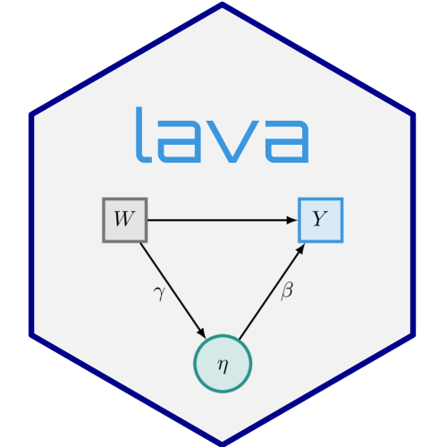

Predictions at a single visit from mmrm models
Source:R/mmrm_predict.R
predict.estimate.mmrm.RdPredictions at a single visit from an mmrm model
Arguments
- object
(estimate.mmrm) estimate of an mmrm model obtained with
estimate(fit, sigma = TRUE).- newdata
(data.frame) long-format data with the subject and visit variables, covariates and (optionally) the response. Defaults to the data used to fit the model.
- time
(integer) index of the visit to predict (default last visit).
- p
(numeric) parameter vector on the scale of
coef(object): mean parameters followed by the upper-triangular elements (column-major, including the diagonal) of the covariance matrix of each group.- ...
additional arguments (not used)
Details
For each subject in newdata, returns the outcome at visit time if it is
observed, and otherwise the conditional mean given the observed outcomes of
the subject. With \(O\) the observed visits of subject \(i\),
$$E(Y_{it} \mid Y_{iO}) = x_{it}^\top\beta +
\Sigma_{tO}\Sigma_{OO}^{-1}(Y_{iO} - X_{iO}\beta),$$
where \(\Sigma\) is the (group-specific) covariance matrix of all visits
(the marginal mean \(x_{it}^\top\beta\) if no outcomes are observed).
This corresponds to predict(fit, newdata, conditional = TRUE) of the mmrm
package.
newdata is first expanded to all subject and visit combinations with
complete_visits().
Examples
if (requireNamespace("mmrm", quietly = TRUE)) {
data(fev_data, package = "mmrm")
fit <- mmrm::mmrm(
FEV1 ~ ARMCD * AVISIT + us(AVISIT | USUBJID),
data = fev_data, reml = FALSE,
optimizer = "nlminb"
)
e <- estimate(fit, sigma = TRUE)
predict(e, newdata = subset(fev_data, USUBJID %in% c("PT1", "PT2")))
}
#> PT1 PT2
#> 20.48379 48.80809
#> attr(,"observed")
#> [1] TRUE TRUE
#> attr(,"time")
#> [1] 4